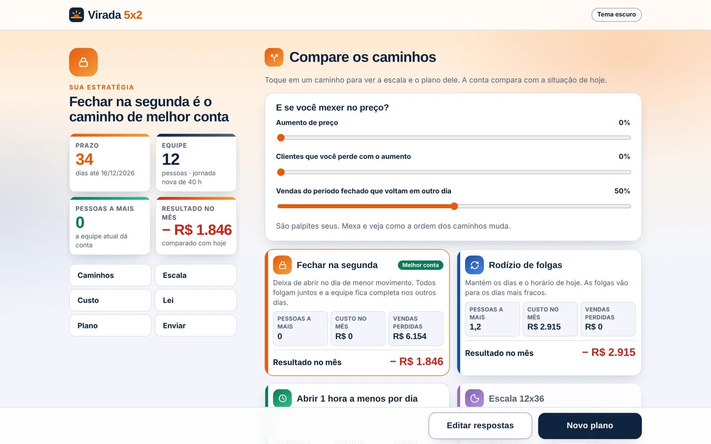

33 dias para a escala 5x2 ser obrigatória
A escala da sua empresa precisa virar até 16/12.
O guia Virada 5x2 compara quatro caminhos com os seus números, mostra quanto cada um custa e entrega a escala por função e um plano com datas. Sem planilha, sem chute.
O que mudou
A Emenda 141 acabou com a escala 6x1. O prazo é 16 de dezembro.
A partir dessa data, toda empresa precisa dar duas folgas por semana. Quem resolver no improviso paga em hora extra, em folga dobrada ou em atendimento ruim.
Prazo curto
Duas folgas por semana a partir de 16/12/2026. Teto de 42 horas só com acordo coletivo; sem ele, 40 horas.
Custo que pesa
Até 13% a mais na folha das pequenas empresas que cobrirem tudo com hora extra, segundo a CNI.
Risco jurídico
Folga não concedida é paga em dobro. Hora acima do limite custa no mínimo 50% a mais.
Como funciona
Quatro perguntas. Um plano pronto para aplicar.
Leva uns 5 minutos. Você responde sobre a sua empresa e o guia faz a conta.
Conte sobre a empresa
Setor, dias abertos, movimento de cada dia, funções e quantas pessoas cada uma precisa.
Compare os caminhos
Pessoas a mais, custo, vendas perdidas e resultado no mês de cada opção, lado a lado.
Receba a escala
Quem folga em que dia, por função, sem deixar nenhuma função descoberta.
Siga o plano
Tarefas com data até 16/12 e o que muda com o acordo do sindicato.
Não existe saída única
Um comerciante fecha a segunda e sobe 5%. Outro vai para 12x36. Qual é o seu?
O guia coloca os quatro caminhos na mesma régua, com os seus números. Você mexe no preço e na perda de clientes e vê a ordem mudar na hora.
Rodízio de folgas
Mantém os dias e o horário. As folgas vão para os dias mais fracos.
Para quem não pode fecharFechar um dia
Todos folgam juntos no dia de menor movimento, com ou sem aumento de preço.
Equipe completa nos outros dias1 hora a menos
Corta a hora mais fraca, na abertura ou no fechamento, e mantém os dias.
Para horário longo e ociosoEscala 12x36
Duas equipes revezando. Cabe na transição, mas passa do teto de 40 horas em 2027.
Depende de acordo coletivo
O que você recebe
Tudo o que precisa para decidir e aplicar
- Comparação dos 4 caminhos com custo, pessoas a mais e vendas perdidas.
- Escala por função com os grupos de folga e alerta de função descoberta.
- Contratar ou pagar hora extra e quanto vale o acordo com o sindicato.
- Plano com datas até 16/12, para marcar o que já foi feito.
- Resumo pronto para mandar ao contador, ao sócio ou à nossa equipe.
Preço
Custa menos do que uma hora extra de um funcionário.
Simulador Virada 5x2
- Todas as telas do guia, no celular e no computador
- Quantas simulações quiser no seu aparelho
- Acesso liberado assim que o pagamento é aprovado
Quer que a gente implante?
Consultoria Virada 5x2
A equipe vai até a empresa, desenha a escala com você, prepara a conversa com o sindicato e mede o resultado.
Perguntas
Antes de comprar
Como recebo o acesso?
O pagamento é feito na Hotmart, por Pix ou cartão. Assim que ele é aprovado, você volta para o site com o guia já liberado. O link de acesso também chega no seu e-mail, para abrir em outro aparelho.
Preciso criar conta ou instalar alguma coisa?
Não precisa instalar nada. O guia abre no navegador do celular ou do computador. Para usar nos dois, abra o link de acesso do e-mail em cada um.
Para que tipo de empresa serve?
Para quem hoje trabalha em 6x1 e tem de 5 a 300 pessoas: lojas, supermercados, restaurantes, bares, hotéis, atacados, centros de distribuição e clínicas, entre outros.
Onde ficam os dados da minha empresa?
No seu aparelho. Para a pesquisa Virada 5x2, o simulador envia sem identificação o setor, o tamanho da equipe, os dias e horários e o caminho escolhido. Nunca envia nome, empresa ou contato, e você pode desligar o envio na tela de resultado.
O guia substitui advogado ou contador?
Não. Ele orienta o planejamento da escala e mostra a conta. A parte legal deve ser validada pelo advogado trabalhista e pelo contador da empresa.
E se a regra mudar com o decreto?
O decreto que detalha a regra foi adiado e ainda pode trazer ajustes. Quando sair, o guia é atualizado e quem já comprou continua com o acesso.
A virada é agora
Faltam 33 dias. Comece hoje.
Por R$ 9,90 você sai com os caminhos comparados, a escala por função e o plano com datas.
Comprar por R$ 9,90 Já tenho código de acesso